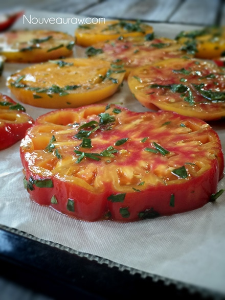
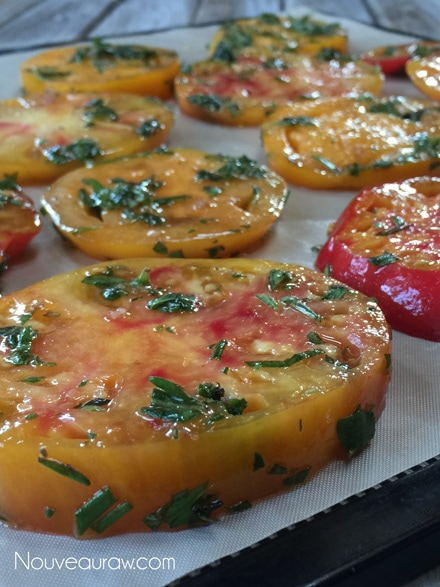
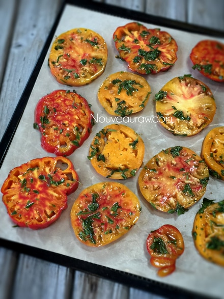
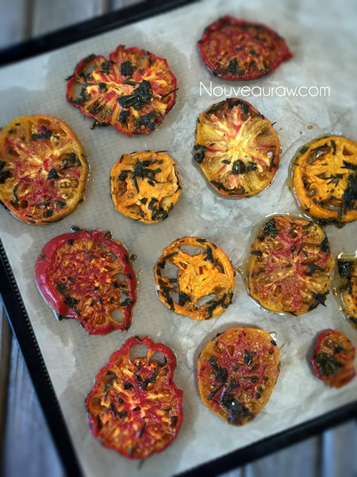

Cooked Dehydrated Tomatoes

~ raw, dehydrated ~
Here is a technique to “cook” tomatoes, giving them that cooked appearance, a softer texture and a way to infuse flavor. Please use the ratios down below as a guideline. It will all depend on what you are making and how much you will need.
You can also use any type of tomato when using this technique. Whether it be Heirloom, Roma, Globe Tomatoes (aka Beefsteak), Cherry tomatoes or Pear Tomatoes… they will all work.
The tomatoes shown in the photo to the right, are heirloom tomatoes. They range widely in terms of size, color, and flavor, but generally taste the most “tomato-like” of all varieties. The other cool thing about heirlooms is that they must be bred with open-air pollination and cannot contain any genetically modified organisms. Be-gone-GMO!
I love using this technique when we have dinner guests over because it can fool anyone into thinking they have been cooked. A raw tomato and a cooked tomato have different tastes and textures to them, which can add a lot of variance to your weekly menu.
Do you remember me talking about flavor layering a while back? This is one of the prime times where you can add “cooked” and fresh tomatoes together in a dish and adding depth and a complexity of flavor and texture.
Let’s Talk Quality…
To get the most flavor out of raw foods, you must start with good quality ingredients. Choose tomatoes that are heavy for their size and intensely colored. Man, I have seen some pretty anemic tomatoes at the grocery store… they look so bad I want to rush them to the ER to have some life jolted back into them. They should be firm, but not rock-hard. Heirloom tomatoes might have blemishes, which don’t necessarily affect quality. Smell the blossom end — it should have an earthy, fresh tomato smell.
Once home, never refrigerate tomatoes, it makes them mealy / woody in texture. They last at room temperature for about 2 to 3 days. If you need to ripen a tomato, put it in a perforated paper bag for a day or two.
- 3 large (604 g) tomatoes, sliced 1/4″ thick
- 3 Tbsp olive oil
- 1 1/2 Tbsp balsamic vinegar
- 1 small clove garlic, minced
- 1 Tbsp fresh basil, minced
- 1 Tbsp fresh marjoram, minced
- 1 Tbsp fresh rosemary, minced
- Pinch Himalayan pink salt
Preparation:
-
- In a small bowl combine the olive oil, balsamic vinegar, garlic and fresh herbs. Set aside.
- Slice the tomatoes roughly 1/4″ thick and place in a medium-sized bowl.
- Pour the marinade liquid over the tomatoes and with your fingers, gently coat each tomato slice.
- Place on non-stick dehydrator sheets and dehydrate at 145 for 1 hour. Reduce heat to 115 and continue to dehydrate for 4-5 hours or until tomatoes are done. They should have a cooked appearance.
Culinary Explanations:
- Why do I start the dehydrator at 145 degrees (F)? Click (here) to learn the reason behind this.
- When working with fresh ingredients, it is important to taste test as you build a recipe. Learn why (here).
- Don’t own a dehydrator? Learn how to use your oven (here). I do however truly believe that it is a worthwhile investment. Click (here) to learn what I use.
This was a beefsteak tomato.


My favorite… heirlooms! Great tomato to add visual appeal
to any dish.



Here they are after drying for 5 hours.

© AmieSue.com